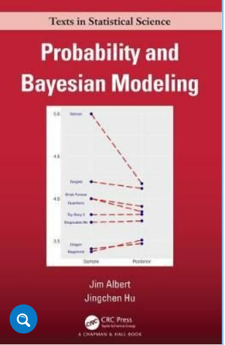

AlbertStanBook
Voorwoord

Onlangs las ik Albert and Hu (2020). Dat boek gaat over waarschijnlijkheid en bayesiaanse statistiek. Om concepten en werkwijzen duidelijk te maken gebruiken Albert en Hu het programma JAGS. Later plaatste Jim Albert ook een blog op internet (Albert (2020)) waarin hij een deel van de analyses overdeed en daarbij het programma Stan en de R-interface Brms. gebruikt. Deze blog van Albert heb ik bewerkt en wat ingekort. Zo kon ik oefenen met Stan en Brms. In deze blog heb ik tegelijk geoefend met het nieuwe programma Quatrodat gemaakt is voor het maken van eigentijdse wetenschappelijke producten; voor het maken van boeken bijvoorbeeld. In deze blog heb ik voor dit keer een klein html-boekje gemaakt van Alberts tutorial dat uit acht hoofdstukken bestaat. Zo was het dit keer niet alleen oefenen met bayesiaanse analyse maar ook met wetenschappelijke opmaak.